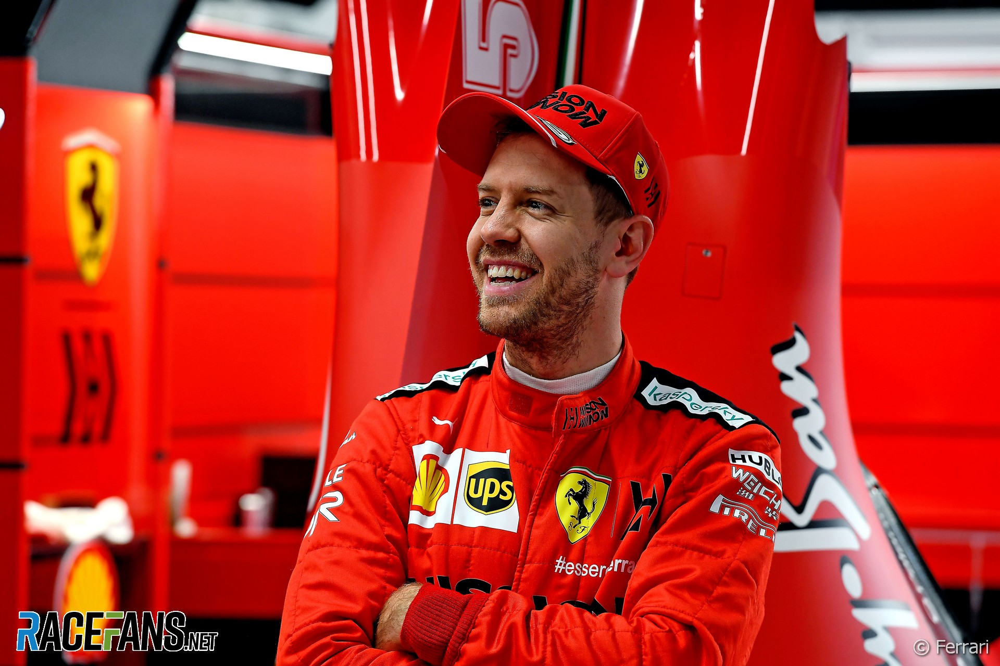

Alberto Ascari: 1950 a 1953
A parceria entre Ascari e a Ferrari começou em 1950, quando a Fórmula 1 estava em sua fase inicial. Durante sua carreira na Ferrari, Ascari ganhou dois campeonatos mundiais consecutivos em 1952 e 1953, estabelecendo-se como um dos principais pilotos da época. Ele foi o primeiro piloto a conquistar dois títulos consecutivos na Fórmula 1. Ascari era conhecido por seu estilo de pilotagem agressivo e sua capacidade de dominar os carros da Ferrari, que eram competitivos naquela época. Ele também era um dos pilotos mais respeitados pelos seus colegas e pela equipe. Em maio de 1955, Ascari deixou a Ferrari para se juntar à equipe Lancia no Campeonato Mundial de Resistência. Em 26 de maio do mesmo ano, ele sofreu um acidente fatal durante um teste de carro no circuito de Monza, na Itália. A morte de Alberto Ascari foi um grande golpe para a Ferrari e para o mundo do automobilismo.
Pulando para a decáda de 70...
Nikki Lauda: 1974 a 1979
Niki Lauda foi um piloto de Fórmula 1 austríaco que se tornou uma figura icônica na história da Scuderia Ferrari. Ele correu pela equipe italiana em dois períodos distintos, de 1974 a 1977 e depois de 1978 a 1979. Durante sua primeira passagem pela Ferrari, Niki Lauda conquistou o título mundial de pilotos em 1975, tornando-se o campeão mundial da Fórmula 1.Lauda parecia bem a caminho de defender seu título em 1976, mas um grave acidente no circuito de Nürburgring, na Alemanha, mudou sua vida e a história da Fórmula 1. Em 1º de agosto de 1976, durante o Grande Prêmio da Alemanha, Lauda sofreu um terrível acidente que o deixou com queimaduras graves no rosto e na cabeça. Surpreendentemente, ele retornou às corridas apenas seis semanas depois, demonstrando uma notável determinação e coragem. Lauda acabou perdendo o título daquele ano por apenas um ponto para James Hunt, mas sua história de recuperação e seu retorno às corridas se tornaram legendários. Após a temporada de 1977, Lauda deixou a Ferrari, mas retornou à equipe em 1978. No entanto, sua segunda passagem pela equipe não foi tão bem-sucedida em termos de conquistas no campeonato mundial. Ele deixou a Ferrari após a temporada de 1979 e encerrou sua carreira na Fórmula 1.
Conheça os grandes brasileiros da nossa história...
Felipe Massa: 2006 a 2013
Felipe Massa, o piloto brasileiro de Fórmula 1, teve uma longa e notável passagem pela Scuderia Ferrari. Ele competiu pela Ferrari de 2006 a 2013 e, durante esse tempo, estabeleceu-se como um dos pilotos mais populares e respeitados da equipe. Sua carreira na Ferrari pode ser dividida em vários momentos notáveis. Em 2006, ingressou na equipe e, logo em seu primeiro ano, venceu duas corridas. Em 2008, teve uma temporada espetacular, conquistando seis vitórias e esteve muito perto de conquistar o título mundial, mas perdeu para Lewis Hamilton no último momento em uma das corridas mais dramáticas da história. Em 2009, um acidente na Hungria o afastou temporariamente das pistas, mas ele se recuperou e retornou em 2010. Nesse ano, passou a ser companheiro de equipe de Fernando Alonso, trabalhando em apoio às aspirações do espanhol no campeonato. Durante esse período, Massa continuou a contribuir para o sucesso da equipe, mas não conseguiu mais vitórias. Sua relação calorosa com a torcida italiana e sua dedicação à Ferrari são aspectos que o tornaram um dos pilotos mais queridos na história da equipe.
O maior piloto da nossa história...
Michael Schumacher: 1996 a 2006
A passagem de Michael Schumacher pela Scuderia Ferrari é uma das histórias mais icônicas da Fórmula 1 e uma das parcerias mais bem-sucedidas na história do esporte. Schumacher, o renomado piloto alemão, competiu pela Ferrari de 1996 a 2006 e desempenhou um papel crucial na transformação da equipe italiana em uma potência dominante. Schumacher trouxe sua habilidade notável como piloto e também exerceu uma influência significativa no desenvolvimento da equipe e do carro. Sua liderança e comprometimento foram fundamentais para a transformação da Ferrari, e ele conquistou cinco campeonatos mundiais consecutivos de pilotos com a equipe italiana, de 2000 a 2004. Durante esses anos, a Ferrari também venceu o campeonato de construtores em várias temporadas, e Schumacher acumulou um grande número de vitórias e estabeleceu recordes na Fórmula 1. Ele é lembrado não apenas por suas conquistas na pista, mas também por seu impacto duradouro na equipe e na história da Fórmula 1. Após sua aposentadoria da Ferrari em 2006, Schumacher fez um breve retorno à Fórmula 1 com a Mercedes antes de encerrar sua carreira definitivamente.
O nosso ultimo campeão...
Kimmi Raikkonen: 2007 a 2009 e 2014 a 2018

Primeira Passagem pela Ferrari (2007-2009): A primeira temporada de Räikkönen na Ferrari, em 2007, foi notável. Ele conquistou seu primeiro e único título de Campeão Mundial de Pilotos na Fórmula 1, vencendo por apenas um ponto de vantagem sobre Lewis Hamilton e Fernando Alonso. O título veio após uma temporada emocionante e altamente competitiva. Em 2008, Räikkönen manteve seu desempenho competitivo e venceu mais corridas, mas não conseguiu defender o título e terminou o campeonato em terceiro lugar. Segunda Passagem pela Ferrari (2014-2018): Räikkönen retornou à Ferrari em 2014 para sua segunda passagem pela equipe italiana, onde se tornou companheiro de equipe de Fernando Alonso e depois de Sebastian Vettel. Durante esse período, Räikkönen continuou a somar pódios e vitórias, mas não conquistou outro título de pilotos. Em 2018, Kimi Räikkönen deixou a Ferrari para se juntar à equipe Alfa Romeo Racing, encerrando sua segunda passagem pela equipe italiana.
Menção honrosa...
Sebastian Vettel: 2015 a 2020
Sebastian Vettel, o piloto alemão de Fórmula 1, integrou a Scuderia Ferrari de 2015 a 2020, uma parceria que gerou grandes expectativas. Logo em seu primeiro ano, Vettel mostrou seu potencial, conquistando três vitórias e terminando em terceiro no Campeonato de Pilotos. Sua chegada reacendeu o espírito competitivo da equipe italiana, que almejava desafiar a Mercedes, então dominante na categoria. As temporadas de 2017 e 2018 viram Vettel e a Ferrari em intensa disputa pelo título, embora tenham sido superados por Lewis Hamilton e a Mercedes. Contudo, a chegada das temporadas de 2019 e 2020 trouxe dificuldades. A equipe enfrentou desafios no desenvolvimento do carro, tornando a busca pelo título mais complicada. Vettel enfrentou momentos difíceis e viu o surgimento de seu companheiro de equipe, Charles Leclerc. No início de 2020, a Ferrari anunciou que Vettel não renovaria seu contrato após a temporada, marcando o fim de sua passagem pela equipe. Ele deixou a Ferrari no final de 2020.